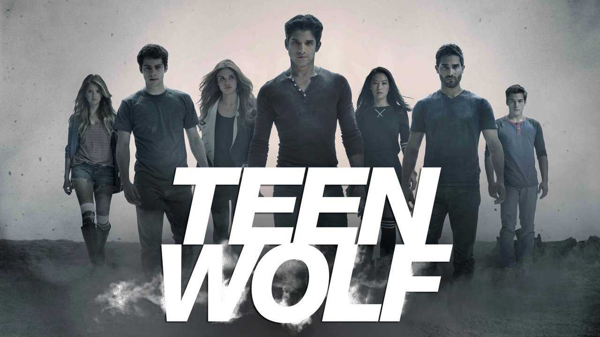
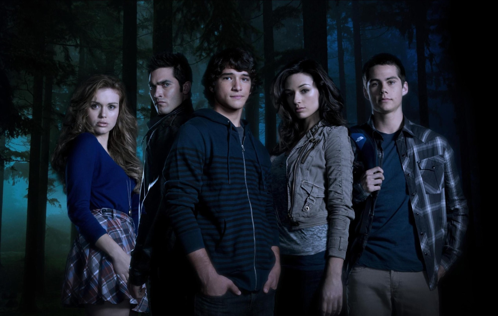

Teen Wolf (2011 Series)
By Jeff Davis
Teen Wolf is an American supernatural teen drama television
series developed by Jeff Davis for MTV. Serving as a
supernatural reimagining of the 1985 film of the same name,
the series is the fourth installment overall in the titular
franchise. Tyler Posey portrays a young werewolf who defends
his California town from supernatural creatures and other
threats.

A film continuation, Teen Wolf: The Movie, was released on
Paramount+ on January 26, 2023.
Synopsis
Teen Wolf revolves around Scott McCall, a high school student
living in the fictional California town of Beacon Hills. Scott
becomes the eponymous teenage werewolf of the series after he is
bitten by an alpha werewolf the night before his second year of
high school, drastically changing his once-ordinary life. The
bite forces him to balance his new identity with day-to-day
teenage life and eventually help protect his hometown, which he
learns is a beacon for supernatural activity.
Scott begins the series as a relatively unpopular and unathletic
student who lives with his divorced mother Melissa, a nurse at
Beacon Hills Memorial Hospital. As a werewolf, he develops
heightened physical abilities and senses well beyond those of an
ordinary human, but he also must control animalistic instincts
that are amplified by feelings of aggression and full moons.
Further complicating matters, Scott develops romantic feelings
for new classmate Allison Argent, who comes from a family of
werewolf hunters that includes her father Chris Argent. Helping
Scott manage his new life are his best friend Stiles Stilinski,
the son of Beacon Hills Sheriff Stilinski, and the natural-born
werewolf Derek Hale

Cast & Character's
Tyler Posey as Scott McCall: Scott is turned into a werewolf
in the series premiere. Together with his friend Stiles,
they begin to uncover the complicated supernatural world of
Beacon Hills, California. Crystal Reed (seasons 1–3; guest
season 5) as Allison Argent: Scott's first love interest,
Allison descends from a long line of werewolf hunters. Her
formidable prowess with a bow and arrow is an asset to the team
in encounters with the shapeshifters and monsters that roam
Beacon Hills. Reed also portrays Allison's ancestor Marie-Jeanne
Valet in the fifth season. Dylan O'Brien as Stiles Stilinski:
Stiles is Scott's childhood best friend, with a talent for
solving mysteries and a fierce loyalty to those closest to him.
As a young child, Stiles is portrayed by Anthony Lapenna.
O'Brien also portrays the Nogitsune, a demon who possesses
Stiles.
Tyler Hoechlin (seasons 1–4; guest
season 6) as Derek Hale: An older werewolf from a prominent
werewolf family in Beacon Hills, Derek starts off with a hostile
relationship towards Scott and his "pack" of friends, but comes
to be a valuable ally. Ian Nelson portrays the teenage Derek.
Holland Roden as Lydia Martin: A popular
girl at Beacon Hills High and a close friend of Allison's. Lydia
initially tries to play down her formidable intelligence, but
she is a genius. After an encounter with Derek's villainous
uncle Peter Hale in season one, her own supernatural abilities—
those of a banshee—begin to manifest.
Colton Haynes (seasons 1–2; guest season
6) as Jackson Whittemore: Lydia's shallow boyfriend. Jackson
antagonizes Scott and Stiles relentlessly but suffers from inner
self-hatred. This causes his encounter with a werewolf's bite to
turn him into another sort of creature: the deadly reptilian
kanima. Jackson abruptly leaves Beacon Hills in the gap between
seasons two and three, but returns for a guest stint at the end
of season six, having come out and entered a relationship with
another werewolf, Ethan.
